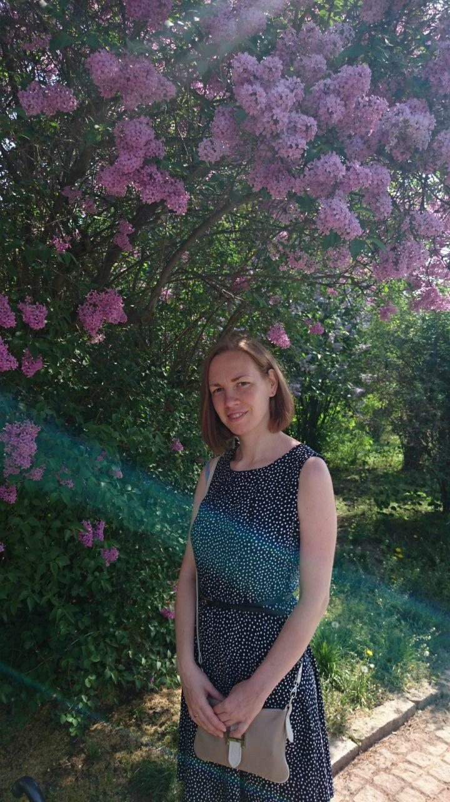
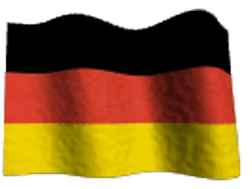
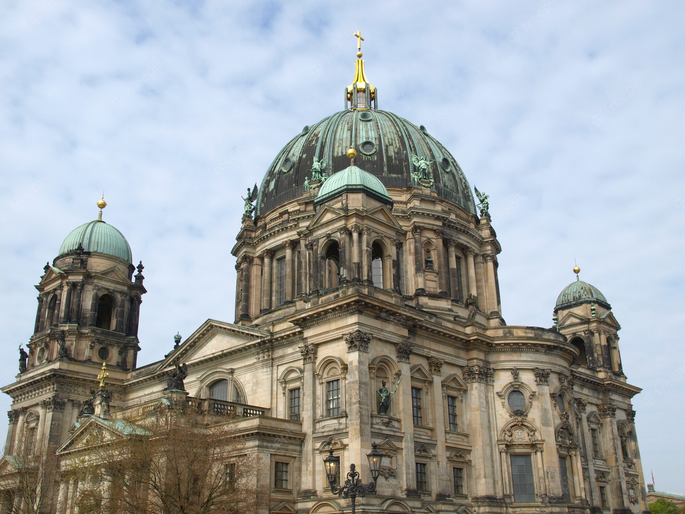

Über mich
 Hallo zusammen. Ich heiße Iullia. Ich komme aus Russland, Moskau. Ich hatte zwie Jahre in Prag gelebt. Und jetzt habe ich seit September 2019 in Berlin gelebt, deshalb werde ich Ihnen Deutsch lernen, über Deutschland erzählen. Ich spreche sowohl Deutsch als auch Russisch.
Привет всем. Меня зовут Юлия, и я из Москвы. Два года я жила в Праге, но с сентября 2019 в Берлине. Я буду учить Вас немецкому языку и рассказывать о Германии. Я говорю на немецком и русском.
Немного о Германии
Пейзажи и города
 Германия – страна разнообразных пейзажей и интересных городов. Ее экономика является крупнейшей в Европе и пятой по величине в мире. Именно в Германии были сделаны многие революционные научные открытия: наука и исследования имеют здесь давние традиции.
Германия удивляет многообразием и красотой природы: на Северном и Балтийском морях простираются гряды островов с песчаными пляжами и дюнами, а вдоль побережья – вересковые пустоши и болота. Густые смешанные леса и средневековые замки украшают долины рек, текущих среди холмов, которые так любили немецкие поэты-романтики. А на юге, отражаясь в чистых горных озёрах, возвышаются вершины Альп, самая высокая из которых – Цугшпитце (ок. 3000 метров над уровнем моря).
Население Германии составляет более 80 миллионов человек – это самая густонаселенная страна в центре Европы. Почти половина жителей живет в 76 городах с населением более 100.000 человек. Самыми крупными немецкими городами являются Берлин (3,3 млн), Гамбург (1,7 млн) и Мюнхен (1,3 миллиона). Любой университетский город Германии – как большой и современный, так маленький и уютный – может похвастаться своей уникальной историей. Во многих городах хорошо сохранились исторические центры, окруженные средневековыми городскими стенами. В некоторых районах можно полюбоваться фахверковыми домами или длинными улицами с роскошной застройкой эпохи грюндерства – периода небывалого роста немецкой экономики в 19 веке. Культурная жизнь и больших и малых городов насыщена концертами, фестивалями, спектаклями, выставками, спортивными мероприятиями и т.д.